espaços e subespaços vetoriais: que regras a sacola precisa cumprir
Um vetor é uma sacola de segmentos orientados. Um segmento orientado é uma reta com ponta de seta. Uma reta é o caminho entre dois pontos. E um ponto pode ser uma matriz, um número complexo, um polinômio, uma função.
Logo: que regras eu preciso conferir para dizer que uma sacola onde eu ponho vetores merece o nome de espaço vetorial? E o que muda quando ela mora dentro de outra?
Autor · Mateus Felipe Alkimim Pereira
Coautora · Sara Catiele Nogueira Pereira
Orientador · Rosivaldo Antônio Gohnan
Antes de qualquer conta: a matemática escreve com convenções que quase nunca são ditas em voz alta. Ditas, elas deixam de ser barreira — e você passa a decifrar um símbolo novo sem esperar que ele seja apresentado.
| \(V\), \(W\) | maiúscula inclinada — a sacola grande: um espaço inteiro. Lê-se "vê", "dáblio" |
| \(u\), \(v\), \(w\) | minúscula inclinada — um habitante da sacola: um vetor. Lê-se "u", "vê", "dáblio" |
| \(\alpha\), \(\beta\) | letra grega — o número que estica; nunca é o assunto da folha. Lê-se "alfa", "beta" |
| \(\mathbb{R}\) | letra vazada — um conjunto de números. Lê-se "erre": todos os números reais |
| \(o\) | o habitante que não faz nada — o neutro. Na imagem, a folha preta |
| \(-u\) | o oposto de \(u\): o que o desfaz. Lê-se "menos u" |
| \(P_3\), \(M_{m\times n}\) | índice embaixo — diz qual, nunca quantas vezes. Lê-se "pê três", "eme, eme por ene" |
| \(P_3(\mathbb{R})\) | parêntese depois de um nome — aplicar, não multiplicar. Lê-se "pê três dos reais" |
Lá, um vetor era \(\vec v\) — com seta, porque era uma seta. Aqui ele é \(u\), sem seta. E \(\alpha\), que lá era um ângulo, aqui é o número que estica.
A palavra "sacola" aparece duas vezes no encadeamento da capa, com sentidos diferentes — e fundir os dois é o erro mais caro que se pode cometer neste assunto:
uma mora dentro da outra. A pequena junta setas que são "a mesma seta"; a grande junta vetores que são diferentes. Chamar as duas pelo mesmo nome faz o aluno achar que espaço vetorial é um vetor grande.
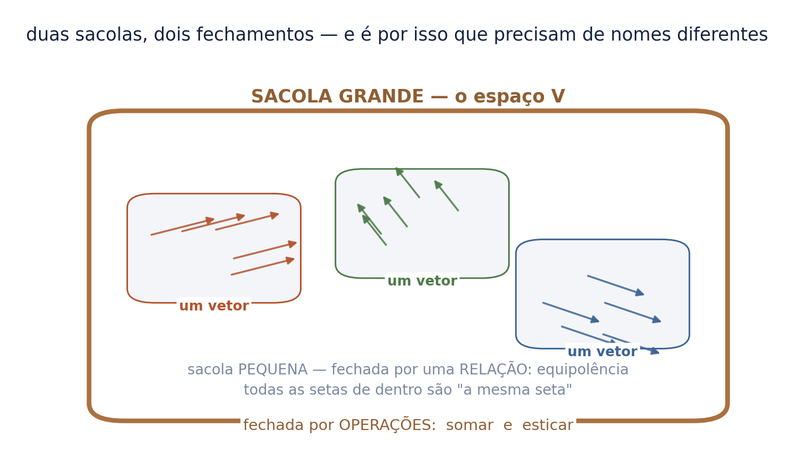
É a mesma palavra — fechado — fazendo dois trabalhos. Na pequena, "fechado" quer dizer: se você entrar com uma seta, todas as equipolentes a ela já estão lá dentro.
Na grande, quer dizer: se você fizer contas com o que está dentro, o resultado não sai.
guarde esta frase, porque o seminário inteiro é ela: subespaço é a sacola de onde não dá para vazar. Todo o resto é aprender a procurar o furo.
Some e estique uma matriz. Some e estique um número complexo. Um polinômio. Uma função.
São quatro objetos sem nenhum parentesco aparente — e a coreografia é idêntica: casa com casa, coeficiente com coeficiente, altura com altura.
é aí que a álgebra linear nasce. Não como "o estudo de setas", mas como o estudo do que sobra quando você esquece o que o objeto é e guarda só como ele soma e como ele estica.
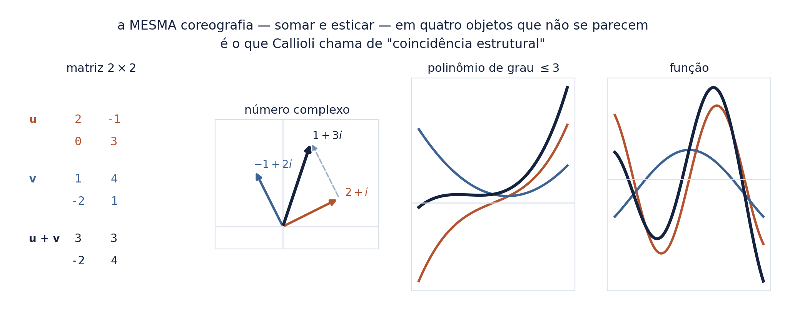
No seminário de geometria, um vetor se escrevia \(\vec v\): com seta, porque ele era uma seta — o nome de uma família de segmentos orientados.
Daqui em diante ele se escreve \(u\), sem seta. E a razão não é economia de tinta: um polinômio não tem ponta. Uma matriz não tem ponta. Uma função não tem ponta.
quando a notação perde um traço, ela está dizendo que aquele traço não era essencial. A seta caiu porque a coreografia — somar e esticar — sobrevive sem ela. O que a seta desenhava era o objeto; o que sobrou é o comportamento.
Guarde a troca, porque ela é a tese deste seminário em um símbolo só: deixamos de estudar o que a coisa é e passamos a estudar o que a coisa faz.
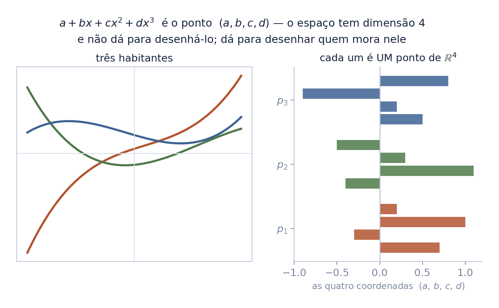
De um lado, o conjunto \(V\) das setas — os vetores da geometria, definidos por segmentos orientados. Do outro, o conjunto \(M_{m \times n}(\mathbb{R})\) das matrizes reais.
À primeira vista, nada em comum. Mas somar duas setas e somar duas matrizes obedecem às mesmas regras; esticar uma e esticar a outra, também. Os dois conjuntos têm a mesma coincidência estrutural.
partindo das setas e das matrizes, mostrando que somam igual e esticam igual, chega-se à conclusão de que estudá-las separadamente é desperdício. A definição que vem a seguir é só o nome dessa coincidência.
É a mesma porta pela qual chegamos pelo lado da sacola — a diferença é só de onde se entra.
Há na sacola uma soma que, dados dois habitantes \(u\) e \(v\), devolve um terceiro, \(u+v\), que também está nela. E essa soma cumpre quatro exigências:
a) \(u + v = v + u\), quaisquer que sejam os dois
(comutativa);
b) \(u + (v + w) = (u + v) + w\) (associativa);
c) existe na sacola um habitante \(o\) com \(u + o = u\), qualquer que
seja \(u\) (neutro);
d) cada habitante \(u\) tem na sacola um oposto \(-u\), com
\(u + (-u) = o\) (oposto).
"u mais vê é igual a vê mais u"; "u mais o neutro é igual a u"; "u mais menos u é igual ao neutro".
em ordem: a ordem não importa; o agrupamento não importa; existe um elemento que não faz nada; e todo mundo tem quem o desfaça. Nada aqui fala de setas — e é de propósito.
Há também uma multiplicação que toma um número real e um habitante da sacola e devolve outro habitante. Para ela vale:
a) \(\alpha(\beta u) = (\alpha\beta)u\);
b) \((\alpha + \beta)u = \alpha u + \beta u\);
c) \(\alpha(u + v) = \alpha u + \alpha v\);
d) \(1u = u\).
"alfa vezes, beta vezes u, é igual a alfa-beta vezes u"; e as duas do meio são as distributivas.
a (d) parece boba — "esticar por 1 não faz nada" — e é a que mais reprova candidato. Sem ela, dá para inventar uma operação que satisfaz as outras sete e não serve para nada.
Oito ao todo. Uma sacola que passa nas oito é um espaço vetorial — não importa se dentro dela há setas, matrizes ou funções. Essas oito regras têm um nome técnico, que você vai encontrar em qualquer livro: axiomas. É a mesma coisa, com roupa de domingo.
Somar dois polinômios é somar as quatro coordenadas. Esticar é esticar as quatro. As oito regras valem, e valem pelo mesmo motivo que valem em \(\mathbb{R}^4\).
o espaço dos polinômios de grau até 3 tem quatro eixos. Você não consegue desenhá-lo — mas consegue desenhar quem mora nele, e é o que a figura faz: cada curva à esquerda é um ponto à direita.
É a resposta honesta ao limite do método visual: a figura não morre quando faltam eixos. Ela muda de emprego — deixa de mostrar o espaço e passa a mostrar os habitantes.
Seja \(V\) uma sacola que já passou nas oito regras, esticando por números reais. Um subespaço de \(V\) é um pedaço \(W\) de dentro dela que cumpre três exigências:
(a) o neutro \(o\) está em \(W\);
(b) somando dois habitantes de \(W\), o resultado ainda está em
\(W\);
(c) esticando um habitante de \(W\) por qualquer número real
\(\alpha\), o resultado ainda está em \(W\).
"o neutro está em dáblio"; "u mais vê está em dáblio"; "alfa vezes u está em dáblio".
três condições, não oito. E não é simplificação de professor: é teorema. A pergunta certa é por que as outras cinco somem.
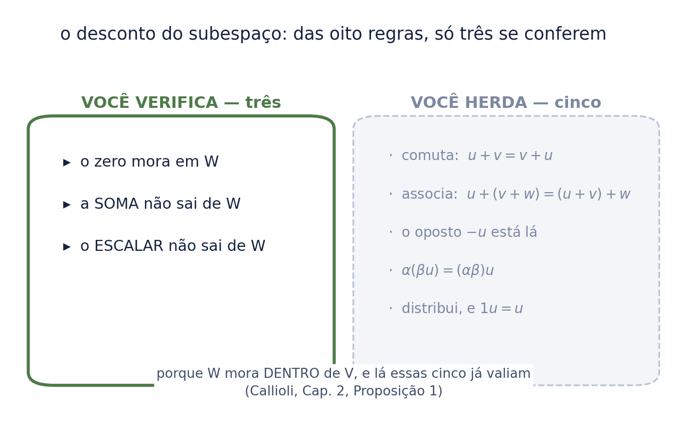
Se \(W\) é um subespaço de \(V\), então \(W\) já é, por conta própria, um espaço vetorial inteiro.
A rigor haveria oito itens a provar. Basta provar um: que se \(u\) está em \(W\), o oposto \(-u\) também está — e é só esticar por \(\alpha = -1\) na exigência (c).
a comutativa já valia em \(V\); os elementos de \(W\) são elementos de \(V\); logo continua valendo. O mesmo para a associativa e as distributivas. Elas não precisam ser conferidas porque não têm como falhar.
O oposto é o único que dá trabalho — e some numa linha: multiplique por \(-1\), e a regra (c) o entrega de graça.
As três condições viram um único gesto: ponha um vetor na sacola, faça as duas operações, e veja se ele escapa.
o quadrante é o exemplo que mais ensina: ele passa em uma das operações e reprova na outra. Não basta fechar na soma.
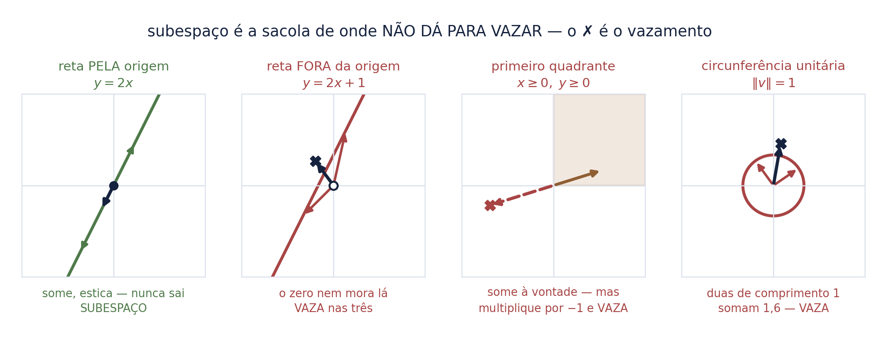
| inversível | a matriz que dá para desfazer: existe outra que, multiplicada por ela, devolve a identidade \(I\). Pelo seminário anterior, são exatamente as de determinante diferente de zero |
| singular | o nome da que não tem inversa — determinante zero. Lê-se "singular", e não quer dizer "estranha": quer dizer "achatada" |
| simétrica | a que não muda quando se trocam linhas por colunas: a entrada da linha \(i\), coluna \(j\) é igual à da linha \(j\), coluna \(i\). A diagonal funciona como espelho |
| sistema homogêneo | um sistema linear em que o lado direito é todo zero. Ele sempre tem ao menos uma solução — a solução nula —, e é por isso que o neutro nunca falta |
os quatro aparecem juntos na próxima folha porque dois deles fecham a sacola e um vaza — e o que decide não é quantas matrizes o conjunto tem, é a forma da condição que o define.
O teste virou ferramenta: dá-se um conjunto, e ela procura a testemunha do vazamento. Doze conjuntos rodados, com o furo exibido em cada um.
e ela ensinou uma lição sobre si mesma. Para "matrizes com \(\det \neq 0\)", vinte mil sorteios passam por cima do furo da soma — duas matrizes sorteadas quase nunca somam uma matriz singular, daquelas da folha anterior. A testemunha teve de ser escrita à mão.
Por isso a ferramenta exibe o furo a quem já sabe onde ele está; ela não descobre se ele existe. O teste de subespaço se faz por argumento — a máquina serve à intuição, não a substitui.
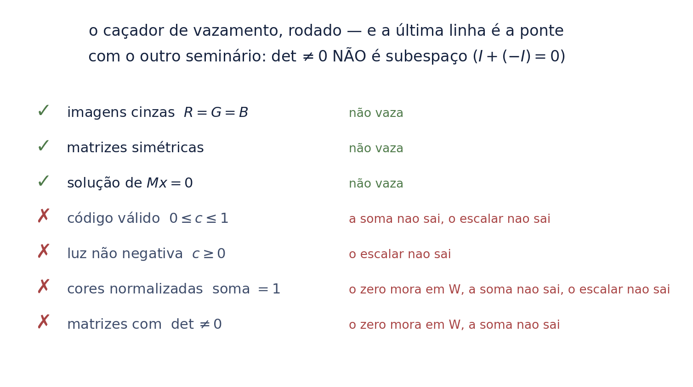
É a ponte com o seminário dos determinantes, e ela surpreende quase todo mundo:
Aqui \(o\), o neutro deste espaço, é a matriz nula — a que só tem zeros. Ela é quem não faz nada na soma, como a folha preta fazia na imagem. E o determinante dela é zero, logo o conjunto também falha na exigência (a): o neutro está de fora.
"ser inversível" é uma propriedade genérica — quase toda matriz tem —, e mesmo assim o conjunto delas é cheio de buracos. Ser numeroso não é ser fechado.
Compare com o vizinho: o conjunto das matrizes simétricas é subespaço, e o das soluções de um sistema homogêneo também. O que fecha não é o tamanho — é a forma da condição.
| canal alpha | a quarta tabela de números, ao lado de R, G e B: diz o quanto de cada pixel é opaco. "Alpha zero" é totalmente transparente |
| código e luz | o número que o arquivo guarda, e a quantidade de luz que ele representa. Não são a mesma coisa — a Estação 6 inteira vive dessa diferença |
| sRGB | a receita que converte luz em código e de volta. É uma curva, não uma reta — e é aí que mora o problema |
| float, EXR | formato que guarda número com vírgula e sem teto. O de 8 bits guarda só 256 degraus entre 0 e 1, e não tem onde pôr o que passa disso |
| antisserrilhado | a borda suavizada: o pixel da beirada recebe uma mistura dos dois lados em vez de escolher um |
| supersamplear | calcular numa grade muito mais fina e só depois reduzir. Serve de verdade de referência para medir o erro dos outros caminhos |
Um quadro \(1920 \times 1080\) em RGB tem \(6\,220\,800\) números. Ele é um ponto de \(\mathbb{R}^{6\,220\,800}\).
no ofício, uma folha é um quadro — a imagem inteira de um instante. Somar duas folhas com o Merge é somar dois vetores desse espaço.
o compositor passa o dia inteiro fazendo álgebra linear e chamando de outra coisa. E as oito regras são exatamente por que aquelas operações se comportam: somar A com B dá o mesmo que B com A, a ordem dos merges não altera o resultado, e existe uma folha preta que não faz nada.
A folha preta é o \(o\) da Definição 1. Ela tem nome no ofício: black.
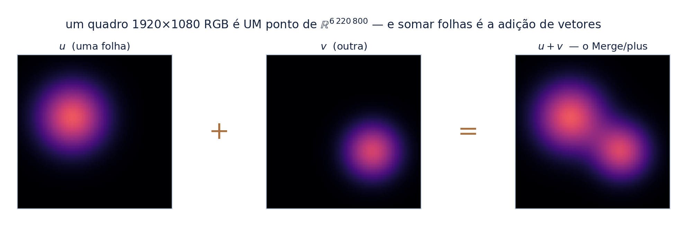
Dentro do espaço das imagens, alguns conjuntos fecham e outros vazam — e a diferença tem consequência prática:
a última é a mais útil: é por isso que um despill mal feito — a limpeza que tira do ator o verde que o fundo jogou nele — produz pixel negativo. Ele não está bugado — está saindo de um conjunto que nunca foi fechado.
O conjunto que a ferramenta de 8 bits realmente oferece é o código em \([0,1]\). Ele reprova nas duas operações. Medido sobre 200 mil sorteios:
metade. Não é caso de borda — é o caso comum. Dois pixels claros somados estouram, e o conjunto não tem onde pôr o resultado.
Este é um axioma que cai de verdade: o fechamento. E é a razão de existir do float e do EXR — que não é conforto de precisão, é ter onde guardar a soma.
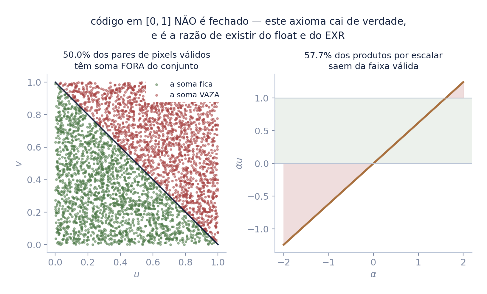
Um é o da luz — o que o sensor mede. Outro é o do código — o que o arquivo guarda. A conversão entre eles (o sRGB) é uma bijeção — cada valor de um lado tem exatamente um correspondente do outro, e vice-versa, de modo que a ida e a volta não perdem ninguém — e não é linear. Medido:
"o maior valor do módulo da diferença entre: codificar a soma de a com b, e somar a codificação de a com a de b".
atenção ao que isto não diz: não diz que o sRGB "quebra os axiomas". Valor codificado é número, e números somam e esticam perfeitamente. Os oito axiomas passam nos dois lados.
O que quebra é a ponte: somar no código não é a mesma coisa que somar luz.
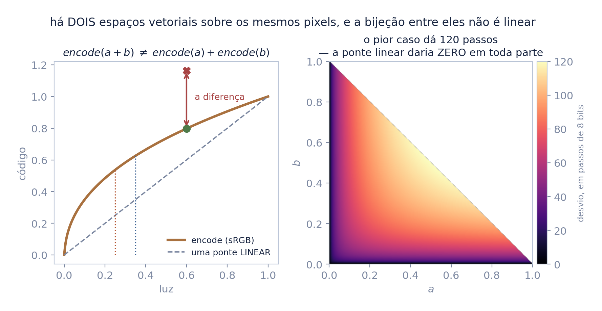
Os axiomas não escolhem entre os dois espaços: passam nos dois. Quem escolhe é o mundo — porque luz superpõe.
Escolher um espaço vetorial não é só conferir regras sobre um conjunto. É escolher as operações — e elas têm de ser as que o seu problema de fato executa.
duas lâmpadas acesas ao mesmo tempo entregam a soma das luzes. Não a soma dos códigos. A física fez a escolha antes de você abrir o software; o "linear workflow" é apenas obedecer a ela.
É a lição mais transportável deste seminário, e ela vale muito além da imagem: a estrutura certa é a que o fenômeno obedece, não a que passa no formulário.
Um xadrez de 1 px de preto e branco, reduzido pela metade. A resposta fisicamente certa é meia luz — que em código é 188/255. Feita a média no código, sai 128/255.
é o "borrão que escurece" que todo compositor já viu e poucos sabem nomear. A imagem não ficou escura por gosto do software: quase 60% da luz foi embora numa média feita no espaço errado.
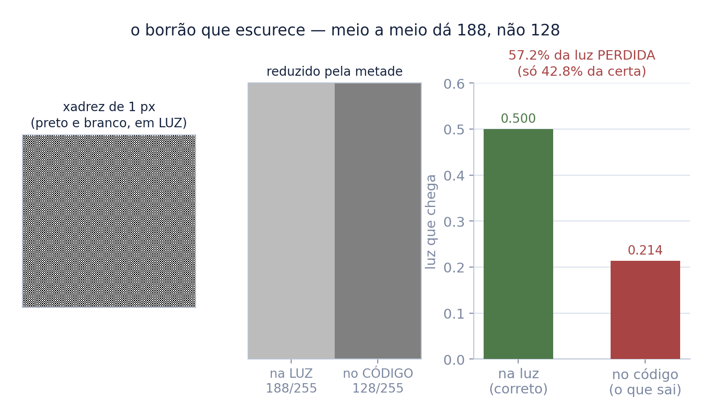
Um disco antisserrilhado, 1044 pixels de cobertura parcial, contra uma verdade supersampleada \(16\times16\):
o segundo caso é o realista, e é o mais traiçoeiro: 7,7 passos não gritam numa folha isolada, mas atravessam a borda inteira e reaparecem em cada composição seguinte.
Uma ressalva de honestidade: o lado linear é exato por construção — média em luz é a definição da verdade. O que se mede aqui não é um duelo, é o tamanho do erro da via errada.
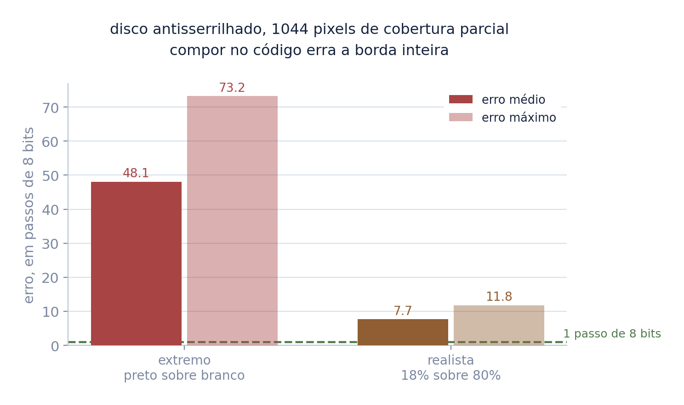
Este seminário ocupa seis nós — espaço vetorial, base e dimensão, transformação linear, produto interno, autovalores e formas quadráticas. É o maior bloco do mapa numa aula só, e ele recebe de cinco: matrizes, determinante, vetores, cônicas e polinômios.
O que ele paga é o que o diferencia de todos os outros: álgebra abstrata, análise funcional e geometria diferencial — três disciplinas que este curso não cobre. Daqui em diante o mapa aponta para fora.
é por isso que este é o último do arco. Não porque o assunto acabe, mas porque a próxima seta sai do curso — e o mapa foi desenhado para dizer exatamente isso.
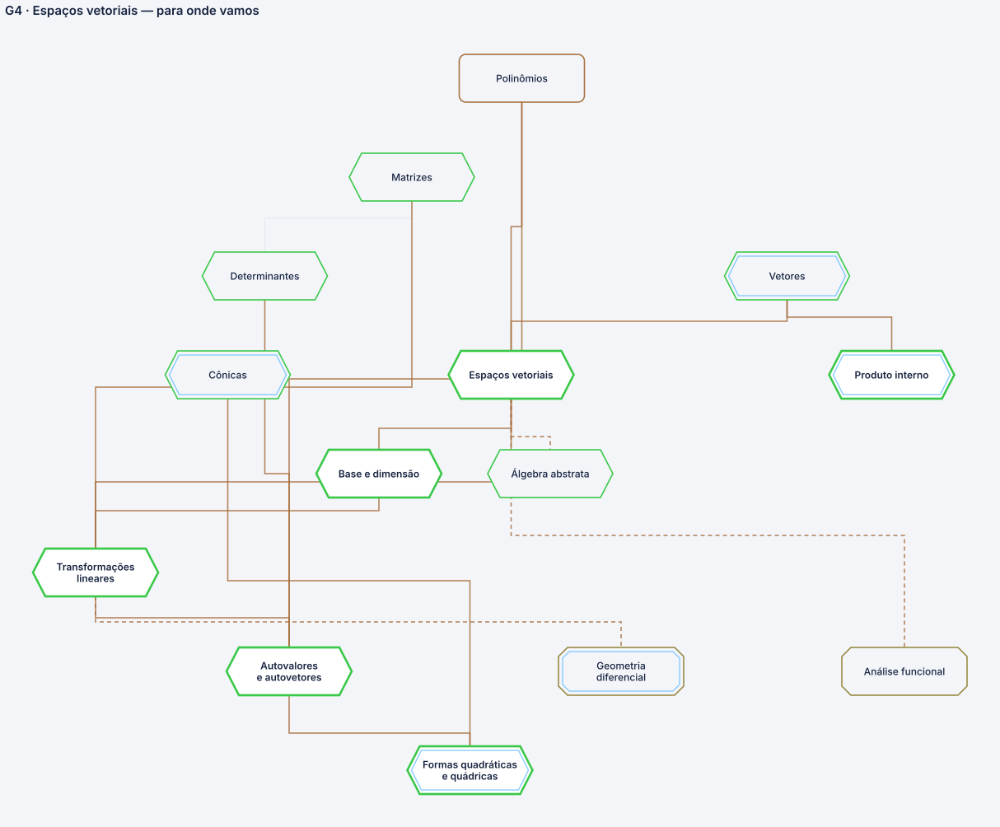
Nenhum deles é decoração: cada um foi introduzido com o conceito que carrega, e volta aqui só para conferência.
| \(V\) | a sacola grande — o espaço vetorial |
| \(V\) | a sacola grande, quando o assunto é o espaço inteiro |
| \(o\) | o elemento neutro; na imagem, a folha preta |
| \(-u\) | o oposto de \(u\): o que o desfaz |
| \(I\) | a matriz identidade — a que não mexe em nada |
| \(P_3(\mathbb{R})\) | o conjunto dos polinômios reais de grau até 3 |
| \(W\) | o pedaço de dentro: o subespaço |
| \(\det\) | escrito em pé porque é nome de operação, não letra que vale um número |
| \(\alpha,\ \beta\) | "alfa" e "beta": os escalares, os números que esticam |
| \(M_{m\times n}(\mathbb{R})\) | o conjunto das matrizes reais de \(m\) linhas por \(n\) colunas |
| \(\mathbb{R}^{n}\) | as listas de \(n\) números reais — um quadro HD é \(n = 6\,220\,800\) |
| \(\|v\|\) | a norma: o comprimento da seta |
e uma correção que fica registrada: a primeira versão deste deck afirmava que "o sRGB quebra os axiomas". Não quebra — e a versão certa, medida, é mais forte que a errada.
três condições, e a pergunta de qual operação o mundo executa
Uma sacola é espaço vetorial quando passa nas oito regras. Um pedaço dela é subespaço quando passa em três — o zero mora lá, a soma não sai, o escalar não sai. As outras cinco vêm de casa.
Mas conferir as oito é necessário e não é suficiente. Existe mais de uma estrutura possível sobre o mesmo conjunto, e o formulário passa em todas. Quem decide é o fenômeno — e, no caso da imagem, quem decide é a luz.